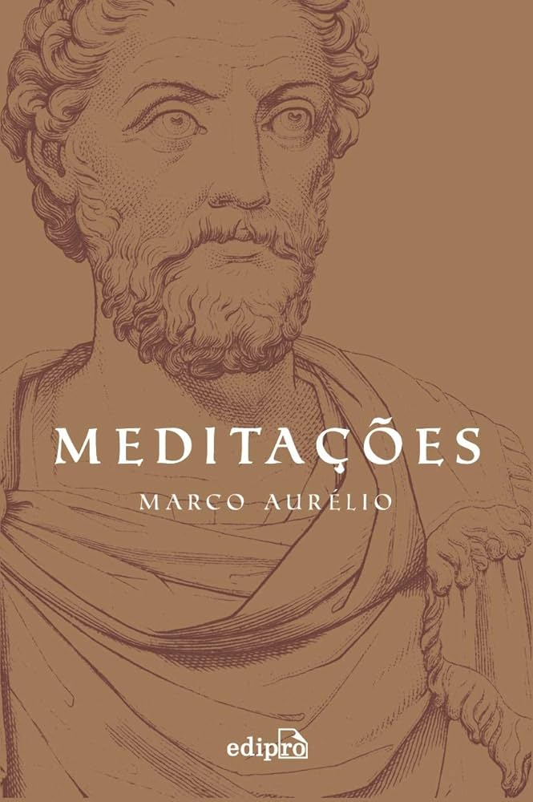

Meditações
Gender: Filosofia
Read in: 12/07/2025
Review:
"Meditações" é uma coletânea de pensamentos do imperador romano Marco Aurélio sobre a vida, a ética e a natureza humana. Escrito como um diário pessoal, o livro traz reflexões profundas baseadas no estoicismo, valorizando a razão, a virtude e o autocontrole. Mesmo escrito há séculos, suas lições seguem atuais e inspiradoras. Uma obra filosófica poderosa para quem busca sabedoria e equilíbrio interior.